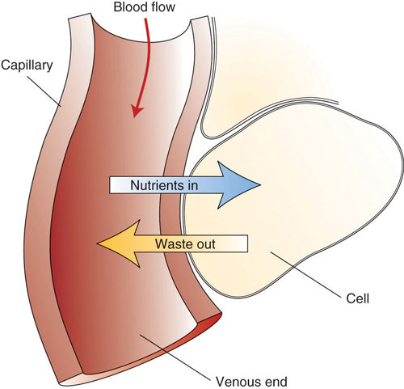

When the digestive system has broken down food to its nutrient components the body eagerly awaits delivery. The first stop of most absorbed nutrients is the liver. One of the liver’s primary functions is to regulate metabolic homeostasis. Metabolic homeostasisThe nutrients consumed and absorbed matches the energy required to carry out life’s biological processes. may be defined as when the nutrients consumed and absorbed matches the energy required to carry out life’s biological processes. Simply put, nutrient energy intake equals energy output. Through the body’s network of blood vessels and veins, glucose and amino acids are directly transported from the small intestine to the liver. Lipids are transported to the liver by a more circuitous route involving the lymphatic system, which contains vessels similar to the circulatory system that transport white blood cells called lymph.
Maintaining the body’s energy status quo is crucial because when metabolic homeostasis is disturbed by an eating disorder or disease, bodily function suffers. This will be discussed in more depth in the last section of this chapter. The liver is the only organ in the human body that is capable of exporting nutrients for energy production to other tissues. Therefore, when a person is in between meals (fasted state) the liver exports nutrients and when a person has just eaten (fed state) the liver stores nutrients within itself. Nutrient levels and the hormones that respond to their levels in the blood provide the input so that the liver can distinguish between the fasted and fed states and distribute nutrients appropriately.
All eleven organ systems in the human body require nutrient input to perform their specific biological functions. No energy in means no work output. Overall health and the ability to carry out all of life’s basic processes is fueled by nutrients. Without them organ systems would fail, humans would not reproduce, and the race would disappear. In this section, we will discuss some of the critical nutrients that support specific organ system functions.
Figure 3.6 The Circulatory System
The circulatory system transports nutrients to all cells and carries wastes out.
The circulatory systemComprised of the heart, blood, and blood vessels. Its main functions are to transport nutrients to all cells and transport wastes from all cells. is one of the eleven organ systems of the human body. Its main function is to transport nutrients to cells and wastes from cells (Figure 3.6 "The Circulatory System"). This system consists of the heart, blood, and blood vessels. The heart pumps the blood, and the blood is the transportation fluid. The transportation route to all tissues is a highly intricate blood-vessel network, comprised of arteries, veins, and capillaries. Nutrients absorbed in the small intestine travel mainly to the liver through the hepatic portal vein. From the liver, nutrients travel upward through the inferior vena cava blood vessel to the heart. The heart forcefully pumps the nutrient-rich blood first to the lungs to pick up some oxygen and then to all other cells in the body. Arteries become smaller and smaller on their way to cells, so that by the time blood reaches a cell, the artery’s diameter is extremely small and the vessel is now called a capillary. The reduced diameter of the blood vessel substantially slows the speed of blood flow. This dramatic reduction in blood flow gives cells time to harvest the nutrients in blood and exchange metabolic wastes.
The human brain (which weighs only about 3 pounds, or 1,300 kilograms) is estimated to contain over one hundred billion neurons. Neurons form the core of the central nervous systemNeurons form the core of the central nervous system, which consists of the brain, spinal cord, and other nerve bundles. The main function of the central nervous system is to sense changes in the external environment and create a reaction to them., which consists of the brain, spinal cord, and other nerve bundles in the body. The main function of the central nervous system is to sense changes in the external environment and create a reaction to them. For instance, if your finger comes into contact with a thorn on a rose bush, a sensory neuron transmits a signal from your finger up through the spinal cord and into the brain. Another neuron in the brain sends a signal that travels back to the muscles in your hand and stimulates muscles to contract and you jerk your finger away. All of this happens within a tenth of a second. All nerve impulses travel by the movement of charged sodium, potassium, calcium, and chloride atoms. These are some of the essential minerals in our diets—essential because they are absolutely required for central nervous system function. Nerves communicate with each other via chemicals built from amino acids called neurotransmitters. Eating adequate protein from a variety of sources will ensure the body gets all of the different amino acids that are so important for central nervous system function.
Every day the brain uses over 20 percent of the energy obtained from nutrients. Its main fuel is glucose and only in extreme starvation will it use anything else. For acute mental alertness and clear thinking, glucose must be systematically delivered to your brain. This does not mean that sucking down a can of sugary soda before your next exam is a good thing. Just as too much glucose is bad for other organs, such as the kidneys and pancreas, it also produces negative effects upon the brain. Excessive glucose levels in the blood can cause a loss of cognitive function and chronically high blood-glucose levels can damage brain cells. The brain’s cognitive functions include language processing, learning, perceiving, and thinking. Recent scientific studies demonstrate that having continuously high blood-glucose levels substantially elevates the risk for developing Alzheimer’s disease, which is the greatest cause of age-related cognitive decline.
The good news is that much research is directed toward determining the best diets and foods that slow cognitive decline and maximize brain health. A study in the June 2010 issue of the Archives of Neurology reports that people over age sixty-five who adhered to diets that consisted of higher intakes of nuts, fish, poultry, tomatoes, cruciferous vegetables, fruits, salad dressing, and dark green, and leafy vegetables, as well as a lower intake of high-fat dairy products, red meat, organ meat, and butter, had a much reduced risk for Alzheimer’s disease.Gu, Y., PhD et al. “Food Combination and Alzheimer Disease Risk: A Protective Diet.” Arch Neurol 67, no. 6 (2010): 699–706. doi: 10./1001/archneurol.2010.84. Other scientific studies provide supporting evidence that foods rich in omega-3 fatty acids and/or antioxidants provide the brain with protection against Alzheimer’s disease. One potential “brain food” is the blueberry. The protective effects of blueberries upon the brain are linked to their high content of anthocyanins, which are potent antioxidants and reduce inflammation. A small study published in the April 2010 issue of the Journal of Agricultural and Food Chemistry found that elderly people who consumed blueberry juice every day for twelve weeks had improved learning and memorization skills in comparison to other subjects given a placebo drink.Krikorian, R. et al. “Blueberry Supplementation Improves Memory in Older Adults.” J Agric Food Chem 58, no. 7 (2010): 3996–4000. doi: 10.1021/jf9029332. More clinical trials are evaluating the effects of blueberries and other foods that benefit the brain and preserve its function as we age.
The muscular systemThe muscular system allows voluntary movement as well as involuntary movements of other organ systems. It consists of skeletal muscle, the heart muscle, and smooth muscles. allows the body to move voluntarily, but it also controls involuntary movements of other organ systems such as heartbeat in the circulatory system and peristaltic waves in the digestive system. It consists of over six hundred skeletal muscles, as well as the heart muscle, the smooth muscles that surround your entire alimentary canal, and all your arterial blood vessels. Muscle contraction relies on energy delivery to the muscle. Each movement uses up cellular energy and without an adequate energy supply muscle function suffers. Muscle, like the liver, can store the energy from glucose in the large polymeric molecule glycogen. But unlike the liver, muscles use up all of their own stored energy and do not export it to other organs in the body. When muscle energy stores are diminished, muscle contraction weakens. However, muscle is not as susceptible to low levels of blood glucose as the brain because it will readily use alternate fuels, such as fatty acids and protein to produce cellular energy.
If you are familiar with endurance sports, you may have heard of “hitting the wall” or “bonking.” These colloquial terms refer to the extreme fatigue that sets in after about 120 minutes of performing an endurance sport, such as marathon running or long-distance cycling. The physiology underlying “hitting the wall” means that muscles have used up all their stored glycogen and are therefore dependent on other nutrients to support their energy needs. Fatty acids are transported from fat-storing cells to the muscle to rectify the nutrient deficit. However, fatty acids take more time to convert to energy than glucose, thus decreasing performance levels. To avoid “hitting the wall” or “bonking,” endurance athletes load up on carbohydrates a few days before the event. This will maximize an athlete’s amount of glycogen stored in their liver and muscle tissues. It is important not to assume that carbohydrate loading works for everyone. Without accompanied endurance training you will not increase the amount of stored glucose. If you plan on running a five-mile race for fun with your friend and decide to eat a large amount of carbohydrates in the form of a big spaghetti dinner the night before, the excess carbohydrates will be stored fat. Another way for athletes to avoid “hitting the wall” is to consume carbohydrate-containing drinks and foods during an endurance event. In fact, throughout the Tour de France—a twenty-two-day, twenty-four-hundred-mile race—the average cyclist consumes greater than 60 grams of carbohydrates per hour.
The functions of the endocrine systemOrgan system that is responsible for regulating nutrient intake, absorption, storage, and usage, in addition to many other things, most notably reproduction. The glands in the endocrine system are the pituitary, thyroid, parathyroid, adrenal, thymus, and pineal gland, as well as the pancreas, ovaries, and testes. are intricately connected to the body’s nutrition. This organ system is responsible for regulating appetite, nutrient absorption, nutrient storage, and nutrient usage, in addition to other functions, such as reproduction. The glands in the endocrine system are the pituitary, thyroid, parathyroid, adrenals, thymus, pineal, pancreas, ovaries, and testes. The glands secrete hormonesBiological molecules transported in the blood that regulate cellular processes in other target tissues., which are biological molecules that regulate cellular processes in other target tissues, so they require transportation by the circulatory system. Adequate nutrition is critical for the functioning of all the glands in the endocrine system. A protein deficiency impairs gonadal-hormone release, preventing reproduction. Athletic teenage girls with very little body fat often do not menstruate. Children who are malnourished usually do not produce enough growth hormone and fail to reach normal height for their age group. Probably the most popularized connection between nutrition and the functions of the endocrine system is that unhealthy dietary patterns are linked to obesity and the development of Type 2 diabetes. The Centers for Disease Control and Prevention (CDC) estimates that twenty-six million Americans have Type 2 diabetes as of 2011. This is 8.3 percent of the US population. The maps in Note 3.35 "Interactive 3.1" show the percentage of adults who are obese, and those with diagnosed Type 2 diabetes within all American counties. You can see that those counties with the highest incidence of obesity also have the highest incidence of Type 2 diabetes. To see how the rise in obesity in this country is paralleled by the rise in Type 2 diabetes, watch the PowerPoint presentation prepared by the CDC (Note 3.35 "Interactive 3.1").
Obesity and Type 2 Diabetes
(click to see video)Watch the National Health video to see the relationship between the rise in obesity and the rise in Type 2 diabetes.
Take a look at the PowerPoint presentation prepared by the CDC that captures the concurrent rises of obesity and Type 2 diabetes in this country. Click on “Maps of Trends in Diabetes and Obesity.”
What is the causal relationship between overnutrition and Type 2 diabetes? The prevailing theory is that the overconsumption of high-fat and high-sugar foods causes changes in muscle, fat, and liver cells that leads to a diminished response from the pancreatic hormone insulin. These cells are called “insulin-resistant.” Insulin is released after a meal and instructs the liver and other tissues to take up glucose and fatty acids that are circulating in the blood. When cells are resistant to insulin they do not take up enough glucose and fatty acids and so glucose and fatty acids remain at high concentrations in the blood. The continuously high amounts of glucose and fatty acids in the blood impair the release of insulin from the pancreas, further exacerbating the situation. The chronic elevation of glucose and fatty acids in the blood also causes damage to other tissues over time, so that people who have Type 2 diabetes are at increased risk for cardiovascular disease, kidney disease, nerve damage, and eye disease.
Do your part to slow the rising tide of obesity and Type 2 diabetes in this country. On the individual level, improve your own family’s diet; at the local community level, support the development of more nutritious school lunch programs; and at the national level, support your nation’s nutrition goals. Visit the CDC Diabetes Public Health Resource website at http://www.cdc.gov/diabetes/. It provides information on education resources, projects, and programs, and spotlights news on diabetes and obesity. The CDC also has a new workplace program called CDC’s LEAN Works! (LEAN: Leading Employees to Activity and Nutrition). The program provides free web-based resources with the mission of designing worksites that prevent obesity. See http://www.cdc.gov/leanworks/ for more details.
The immune systemThe immune system is made up of several different types of white blood cells and other components that act as barricades to foreign invaders. The functions of the immune system are to barricade, seek, recruit, attack, and destroy foreign invaders, such as bacteria and viruses. is comprised of several types of white blood cells that circulate in the blood and lymph. Their jobs are to seek, recruit, attack, and destroy foreign invaders, such as bacteria and viruses. Other less realized components of the immune system are the skin (which acts as a barricade), mucus (which traps and entangles microorganisms), and even the bacteria in the large intestine (which prevent the colonization of bad bacteria in the gut). Immune system functions are completely dependent on dietary nutrients. In fact, malnutrition is the leading cause of immune-system deficiency worldwide. When immune system functions are inadequate there is a marked increase in the chance of getting an infection. Children in many poor, developing countries have protein- and/or energy-deficient diets that are causative of two different syndromes, kwashiokors and marasmus. These children often die from infections that their bodies could normally have fought off, but because their protein and/or energy intake is so low, the immune system cannot perform its functions.
Other nutrients, such as zinc, selenium, copper, folate, and vitamins A, B6, C, D, and E, all provide benefits to immune system function. Deficiencies in these nutrients can cause an increased risk for infection and death. Zinc deficiency results in suppression of the immune system’s barrier functions by damaging skin cells; it is also associated with a decrease in the number of circulating white blood cells. A review of several studies in the journal Pediatrics concluded that zinc supplements administered to children under age five for longer than three months significantly reduces the incidence and severity of diarrhea and respiratory illnesses.Aggarwal R., MD, DM, J. Sentz, MPH and M. A. Miller, MD. “Role of Zinc Administration in Prevention of Childhood Diarrhea and Respiratory Illnesses: A Meta-Analysis.” Pediatrics 119, no. 6 (2007): 1120–30. doi: 10.1542/peds.2006–3481. Zinc supplementation has also been found to be therapeutically beneficial for the treatment of leprosy, tuberculosis, pneumonia, and the common cold. Equally important to remember is that multiple studies show that it is best to obtain your minerals and vitamins from eating a variety of healthy foods.
To ensure that your diet includes zinc-friendly foods, try these foods high in zinc and other immune-system friendly nutrients: oysters, poultry, baked beans, chick peas, cashews, sesame seeds, peanuts, whole grains, and zinc-fortified cereals.
These are just some of the foods that are high in zinc.
Just as undernutrition compromises immune system health, so does overnutrition. People who are obese are at increased risk for developing immune system disorders such as asthma, rheumatoid arthritis, and some cancers. Both the quality and quantity of fat affect immune system function. High intakes of saturated and trans fats negatively affect the immune system, whereas increasing your intake of omega-3 fatty acids, found in salmon and other oily fish, decreases inflammatory responses. High intakes of omega-3 fatty acids are linked to a reduction in the risk of developing certain autoimmune disorders, such as rheumatoid arthritis, and are used as part of a comprehensive treatment for rheumatoid arthritis.
Find out how fat supports brain function and protects nerves by visiting the Franklin Institute Resources for Science Learning website.
http://www.fi.edu/learn/brain/fats.html
Now look at the websites below to see how too much of the wrong kind of fats may be bad for the brain, while other types of fat are good for the brain.
http://archneur.ama-assn.org/cgi/content/full/60/2/194
http://www.sciencedaily.com/releases/2007/12/071210163251.htm
http://www.webmd.com/alzheimers/news/20070418/omeg-3-fatty-acid-slows-alzheimers
After viewing all of the videos, discuss the importance of “good fats” in the diet for optimizing brain function and preventing diseases such as Alzheimer’s.